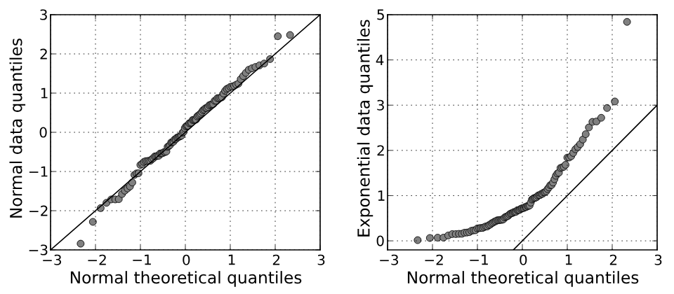

샤피로-윌크 검정 (Shapiro-Wilk Test)

| # | 원문 | 한국어 |
|---|---|---|
| 1 | Normal data quantiles | 정규분포 표본의 분위수 |
| 2 | Normal theoretical quantiles | 정규분포의 이론 분위수 |
| 3 | Exponential data quantiles | 지수분포 표본의 분위수 |
쉽게 풀면
t검정이나 ANOVA 같은 많은 통계 기법은 "데이터가 정규분포를 따른다"는 전제 위에서 작동한다. 그런데 실제로 내 데이터가 정규분포에 가까운지 눈으로만 봐서는 확신하기 어렵다. 샤피로-윌크 검정은 이 질문에 숫자로 답을 주는 방법이다. "이 데이터가 정규분포에서 나왔다"는 귀무가설을 세우고, 검정 결과 p-value가 작으면(보통 0.05 미만) "정규분포라고 보기 어렵다"고 판단한다. 표본 수가 적을 때도 비교적 검정력이 좋아 논문에서 정규성을 확인할 때 가장 흔히 쓰인다.
왜 중요한가
t검정, ANOVA, 회귀분석처럼 논문에서 가장 흔히 쓰이는 통계기법 상당수가 데이터의 정규분포 가정을 전제로 하기 때문에, 샤피로-윌크 검정은 본격적인 분석에 들어가기 전 거치는 표준적인 사전 점검 절차로 자리잡았다. 정규성 가정이 깨졌는데도 모수 검정을 그대로 쓰면 결과의 유의성 판단이 왜곡될 수 있어, 어떤 통계기법을 선택할지(모수 검정 대 비모수 검정)를 결정하는 갈림길 역할을 하는 것이 이 검정의 핵심 중요성이다.
언제 쓰나
표본이 정규분포를 따르는 모집단에서 나왔는지 확인할 때 쓴다. 1965년 새뮤얼 샤피로와 마틴 윌크가 발표했다. 귀무가설은 ‘표본이 정규분포를 따르는 모집단에서 나왔다’이고, p값이 정한 유의수준보다 작으면 귀무가설을 기각해 정규분포가 아닐 가능성이 크다고 본다.
- 검정통계량 W는 분자가 정렬한 표본값의 가중합의 제곱, 분모가 표본 평균에서의 편차제곱합인 비율이다. 가중치는 정규 순서통계량의 기댓값과 공분산 행렬에서 나오며, 기각값은 몬테카를로 모의실험으로 구한다. 데이터와 정규 점수 사이의 상관에 바탕을 둔 검정이라고 이해할 수 있다.
- t검정이나 ANOVA, 회귀분석 같은 모수 검정을 쓰기 전 정규성 가정을 점검하는 단계에서 쓰인다.
- 콜모고로프-스미르노프(K-S) 검정은 극단값에 민감하고 검정력이 낮아 정규성 검정에 더 이상 쓰지 말아야 한다는 의견이 있다. 리요포스 보정을 해도 샤피로-윌크가 검정력이 더 낫다고 보고되었고, 일부 연구자는 이를 최선의 선택으로 본다. SPSS는 50 미만 표본에서 샤피로-윌크를 권한다.
결과는 이렇게 읽는다
- p ≥ 유의수준: 정규성을 기각할 근거가 부족하다는 뜻이다. 정규분포라는 사실이 증명된 것은 아니다.
- p < 유의수준: 정규분포에서 벗어났다고 본다. 이때는 윌콕슨 부호순위검정이나 맨-휘트니 U 검정 같은 비모수 검정을 검토한다.
- 표본 크기의 영향: 표본이 작으면 검정력이 낮아 정규성 검정을 대부분 통과한다. 표본이 크면 실용적으로 문제가 되지 않는 작은 이탈에도 유의한 결과가 나온다. 중심극한정리에 따라 표본이 30~40을 넘으면 정규성 위반을 대체로 견디고, 수백 건이면 분포를 무시해도 된다고 한다.
- 시각 확인과 병행: 히스토그램, P-P·Q-Q 도표, 상자그림만으로는 믿기 어렵지만 정규성 검정은 이를 보완하는 수단이다. 이탈의 크기는 Q-Q 플롯으로 가늠한다.
- 왜도·첨도 z값: z = (왜도 − 0)/표준오차, 첨도도 같은 방식이다. |z| > 1.96이면 p < 0.05, > 2.58이면 p < 0.01, > 3.29이면 p < 0.001이다. 작은 표본에서는 |z|가 1.96 안에 들면 충분하고, 200건 이상이면 ±2.58, 아주 큰 표본에서는 기준을 적용하지 않는다.
예: 혈청 마그네슘(n = 30)은 왜도 z = 1.74, 첨도 z = 0.681이고 샤피로-윌크 p = 0.236이어서 정규로 판단되었다. 혈청 TSH(n = 24)는 왜도 z = 3.38, 첨도 z = 1.52, 샤피로-윌크 p < 0.001로 비정규였다.
논문에는 이렇게 보고한다
- 대상 변수와 집단, 표본 수, W 값과 p값(또는 p 범위)을 쓴다.
- 정규성을 기각했을 때 선택한 분석(비모수 검정, 변환 등)과 그 이유를 쓴다.
- 시각 확인(Q-Q 플롯, 히스토그램)을 했다면 함께 쓴다.
W = 0.96, p = .24로 정규성 가정이 기각되지 않았다(가상의 서술).
잔차를 검정해야 하는 분석(회귀, ANOVA)에서는 원자료가 아니라 잔차에 적용했는지 밝힌다. 표본이 크면 p가 작아도 이탈이 작을 수 있으므로 p값만으로 결론짓지 않는다.
논문에서는 이렇게 쓰입니다
실제 논문에서
국내 학술지 논문에서 이 용어가 쓰인 문장을 그대로 옮겼다. 제목·학술지·연도와 원문 링크를 함께 적었다.
“비자극성 타액군과 자극성 타액군에 대한 total bacteria를 기준으로 Shapiro- Wilk 정규성 검정 결과 두 군 모두 표본의 분포가 정규성을 만족하 지 않는 것으로 나타났다.”
자극성타액과 비자극성 타액에 대한 구강미생물의 정량적 비교: 예비연구, Journal of Korean Academy of Oral Health, 2026 · KoreaMed Synapse · 원문 보기 ↗
예시 문장
아래 예문은 용어의 쓰임을 보이려고 만든 것으로, 실제 논문 문장이 아니다.
이 문장은 데이터가 정규분포 가정을 만족하지 못했기 때문에, t검정 대신 순위 기반의 비모수 검정 방법을 선택했다는 뜻이다.
반대로 정규성 가정이 충족된 경우로, 이때는 모수 검정인 t검정을 그대로 사용할 수 있음을 보여주는 예문이다.
여러 변수 중 일부만 정규성을 위반한 경우, 변수별로 다른 분석 방법을 혼합해 적용하는 실제 연구 상황을 보여준다.
조금 더 깊게 보면
샤피로-윌크 검정 외에도 정규성을 확인하는 방법은 여러 가지가 있으며, 콜모고로프-스미르노프 검정이나 앤더슨-달링 검정 등도 논문에 종종 등장한다. 다만 샤피로-윌크 검정은 특히 표본 크기가 작을 때 상대적으로 검정력이 높다고 알려져 있어 선호되는 편이다. 한편 표본이 매우 클 때는 사소한 편차에도 통계적으로 유의한 결과가 나오기 쉬우므로, 검정 결과만 기계적으로 따르기보다 히스토그램이나 Q-Q 플롯 같은 시각적 확인, 그리고 왜도·첨도 값을 함께 살펴 종합적으로 판단하는 것이 바람직하다.
주의할 점
표본 크기가 매우 크면 아주 작은 편차에도 p-value가 쉽게 작아져 "정규분포가 아니다"라는 결론이 나오기 쉽다. 그래서 Q-Q 플롯 같은 시각적 확인을 함께 하는 것이 좋다.
참고 문헌
- Ghasemi, A., & Zahediasl, S. (2012). Normality tests for statistical analysis: A guide for non-statisticians. International Journal of Endocrinology and Metabolism, 10(2), 486–489.
- Wikipedia contributors (n.d.). Shapiro–Wilk test. Wikipedia.